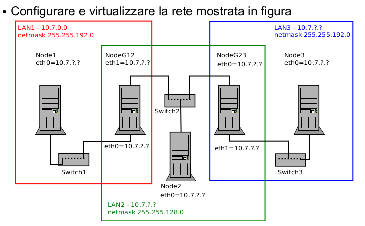
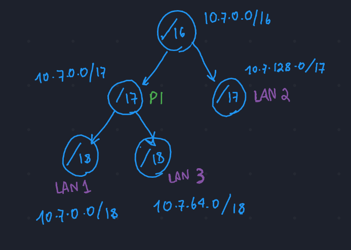

Subnetting, 27/10/22-LAB
Info
Appunti dell'esercitazione di laboratorio sul subnetting. Non sono riportate molte informazioni sulla configurazione in marrionet vera e propria, essendo lunga e tediosa. E' più importante la teoria sul subnetting che sta alla base dell'esercizio.
Table of Contents
1 Considerazioni Iniziali

L'esercizio consiste nella creazione di una rete suddivisa in 3 subnet. La prima cosa da fare è analizzare le netmask per capire le dimensioni delle varie sottoreti.
- LAN1 \(\rightarrow\) 255.255.192.0 \(\rightarrow\) 11..11 11..11 11000000 \(\rightarrow\) \18
- LAN3 \(\rightarrow\) 255.255.192.0 \(\rightarrow\) 11..11 11..11 11000000 \(\rightarrow\) \18
- LAN2 \(\rightarrow\) 255.255.128.0 \(\rightarrow\) 11..11 11..11 10000000 \(\rightarrow\) \17
Albero di indirizzamento
Per capire meglio le successive configurazioni, conviene disegnare una struttura ad albero per visualizzare meglio lo spazio di indirizzamento disponibile, e come partizionarlo adeguatamente. Essenzialmente, si potrebbe decidere di considerare una grande rete come 10.7.0.0/16, e suddividerla in 2 sottoreti, cioè (i) 10.7.0.0/17 e (ii) 10.7.128.0/17, fissando il primo bit dopo i primi 16 bit una volta ad 1 ed una volta a 0. (Basta poi convertire il terzo byte per ottenere i valori 0 e 128 che differenziano le 2 reti).
Una volta fatto ciò, si può rinominare una delle due sottoreti /17 appena create come LAN2, che ha come netmask appunto /17. Il resto della rete (quindi l'altra partizione creata dalla rete "grande"), la si può suddividere in 2 parti usando lo stesso procedimento, per ottenere le due reti minori LAN1 e LAN3, che hanno una netmask di /18.
- P1 \(\rightarrow\) 10.7.0.0/17 \(\rightarrow\) 00001010.00000111.0 0000000.00000000
- LAN1 \(\rightarrow\) 00001010.00000111.00 000000.00000000 \(\rightarrow\) 10.7.0.0/18
- LAN3 \(\rightarrow\) 00001010.00000111.01 000000.00000000 \(\rightarrow\) 10.7.64.0/18
In questo modo, si massimizza lo spazio di indirizzamento senza creare conflitti.
L'albero in figura dovrebbe chiarire le idee \(\downarrow\)

2 Configurazione reti
Ora è solo questione di capire gli indirizzi IP disponibili per ogni rete. Si può fare manualmente oppure usando il tool ipcalc -c addr
2.1 LAN1 \(\rightarrow\) 10.7.0.0/18
Per quanto riguarda LAN1, si possono già definire gli indirizzi IP disponibili:
HostMin: 10.7.0.1 00001010.00000111.00 000000.00000001
HostMax: 10.7.63.254 00001010.00000111.00 111111.11111110
Quindi si possono già assegnare i seguenti indirizzi:
- Node1 \(\Rightarrow\) 10.7.0.1
- NodeG12 eth0 \(\Rightarrow\) 10.7.63.253, per convenzione;
2.2 LAN2 \(\rightarrow\) 10.7.0.0/18
HostMin: 10.7.128.1 00001010.00000111.1 0000000.00000001 HostMax: 10.7.255.254 00001010.00000111.1 1111111.11111110
- Node2 \(\Rightarrow\) 10.7.128.1
- NodeG12 eth1 \(\Rightarrow\) 10.7.255.253, per convenzione;
- NodeG23 eth0 \(\Rightarrow\) 10.7.255.254, per convenzione;
2.3 LAN3
HostMin: 10.7.64.1 00001010.00000111.01 000000.00000001 HostMax: 10.7.127.254 00001010.00000111.01 111111.11111110
- Node3 \(\Rightarrow\) 10.7.64.1
- NodeG23 eth1 \(\Rightarrow\) 10.7.127.254, per convenzione;
3 ICMP
3.1 Definizione
Internet control Message Protocol
\(\rightarrow\) sotto-protocollo che gestisce messaggi di errore e
di controllo. E' un protocollo di livello 3 che comunica
informazioni attraverso il payload di un datagramma IP.
3.2 Echo request
Messaggi del protocollo ICMP che servono per testare attivamente la comunicazione tra due host. Questi messaggi sono usati da ping, a livello end-to-end. Quando un host riceve un messaggio di echo request, a sua volta risponde con un messaggi echo reply.
Il campo code definisce il messaggio specifico:
- Network Unreachable \(\rightarrow\) next hop sconosciuto, problema a livello 3.
- Host Unreachable \(\rightarrow\) impossibile raggiungere l'host a livello H2N;
- Port Unreachable \(\rightarrow\) lo vederemo più avanti.
3.3 Time Exceeded Message
Messaggio che comunica la fine del tempo di vita di un pacchetto. I router possono essere configurati per segnalare quando scartano un pacchetto, nel momento in cui il time to live raggiunge lo 0.
\(\Rightarrow\) provare a creare una rete con un loop, in cui due host si usano a vicenda come default gateway. Vedere il blocco di slide su ICMP a riguardo;
Questo messaggio è usato anche per testing di connettività.
Esiste un comando, ossia traceroute, che funziona similmente
a ping. Ping lavora livello end-to-end, mentre traceroute
specifica ogni singolo router che viene attraversato!
Questo comando usa delle primitive di basso livello per inserire un ttl personalizzato per ogni pacchetto che invia nella rete.